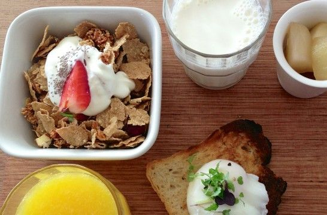
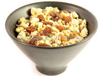
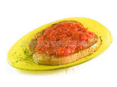
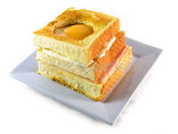

El mejor desayuno para hacer deporte por la mañana
El tipo de desayuno que se toma influye en gran medida en las sensaciones físicas que se tienen a la hora de hacer ejercicio

Una alimentación equilibrada y la práctica regular de actividad física son indispensables para llevar un estilo de vida saludable. Cuando se aúnan estos dos factores -dieta y ejercicio- para mejorar el rendimiento deportivo, el qué se coma, cuánto, cómo y cuándo pueden marcar la diferencia entre dos personas bien entrenadas. Las características individuales del deportista, el tipo de ejercicio que realiza y las exigencias del mismo, así como el momento del día en el que se hace la actividad son factores para tener en cuenta a la hora de diseñar la dieta. Si se practica deporte por la mañana, el desayuno influirá en gran medida en las sensaciones físicas que se tendrán a la hora del ejercicio. En este artículo se seleccionan ocho alimentos que por su perfil nutricional son interesantes para desayunar antes de hacer deporte por la mañana.
Desayuno para deportistas: las ocho opciones más interesantes
Tenemos la costumbre de desayunar algo dulce. Un café con leche, una taza de leche con cacao y con galletas, tostadas untadas de mermelada o un tazón de cereales son algunas de las elecciones que más se repiten. En todas ellas, el denominador común es la alta concentración de azúcares simples, una decisión alimentaria nada saludable como hábito para la población en general, y para los deportistas en particular. Para obtener un aporte de energía gradual que permita hacer ejercicio en plenas facultades, se aconseja combinar en el desayuno hidratos de carbono complejos y simples, con predominio de los primeros. Las siguientes son ocho recomendaciones, aunque la combinación de sabores y texturas según los gustos y la imaginación permiten crear muchos más desayunos personalizados.
Copos de avena. La avena es un cereal muy fácil de digerir, por lo que está indicado si a continuación se hace ejercicio. Los copos de avena ligeramente calentados en agua, leche o bebida vegetal durante unos minutos (para favorecer su digestión) y mezclados con frutas desecadas y semillas constituyen un desayuno energético muy recomendable. Además, destacan por su concentrado de vitamina B1, que sirve a la nutrición y equilibrio funcional del sistema nervioso. Los requerimientos de esta vitamina aumentan si se sigue una dieta rica en hidratos, como lo es la recomendada en el deporte. La avena también se puede emplear en la dieta del deportista para elaborar barritas o galletas energéticas, preparar sopas o espesar purés en sustitución de la patata (es más nutritiva la avena). Es importante no confundir los copos de avena con el salvado de avena, la parte fibrosa del cereal.
Arroz integral. El grano de arroz integral reúne una buena mezcla de vitaminas del grupo B, magnesio, fibra e hidratos de carbono complejos, nutrientes todos ellos que son requeridos a nivel celular durante la práctica deportiva. Iniciarse en la dieta con el consumo de arroz integral e incorporarlo en los desayunos es una alternativa saludable que provee de energía duradera y redunda en vitalidad para hacer frente a la actividad física matutina y al resto de tareas de la mañana. Las recetas de arroz con leche cambian según la naturaleza de la leche: receta estilo tradicional, con bebida vegetal de avena o con bebida de soja, con trozos de frutas…

Muesli “personalizado”. Un mismo producto combina una buena proporción de azúcares complejos (los cereales) con simples (las uvas pasas y la miel si lleva). El muesli es más completo y más idóneo como alimento para deportistas que los cereales de desayuno. Además, entre los distintos cereales, no todos valen: la presencia de azúcares, de grasas o aceites vegetales y de sal desvirtúa el valor nutricional de un producto que en origen es saludable. En cuestión de muesli, son muchas las variedades comerciales, a las que se puede sumar las recetas caseras de muesli hecho según gustos y preferencias, como un modo interesante de diversificar los desayunos: copos inflados con pasas y almendras, de tres cereales, o muesli tradicional mezclado con yogur y frutas.
Almendras. Un puñado pequeño de frutos secos en el desayuno complementa en proteínas, grasas insaturadas saludables y minerales la primera comida del día. Las almendras son los frutos secos más ricos en calcio, buena fuente de magnesio, y si se comen con piel, aportan más fibra. Asimismo, son alimentos alcalinizantes del medio, un aspecto interesante en la dieta del deportista, ya que la acidificación merma el rendimiento físico y predispone a lesiones músculo-tendinosas y a una más lenta recuperación física y muscular. Una dieta hiperproteica (más cárnica, consumo abundante de huevos, de batidos proteicos, etc.), tan común como contraproducente para muchos deportistas, favorece la acidificación del medio.

Pan con… El pan del día anterior desmenuzado y mojado en leche o bebida vegetal podría considerarse como la versión original de lo que hoy son los cereales de desayuno. Escoger un pan de calidad, integral, con frutos secos o multicereales es una sana costumbre de sustituir el pan blanco. En un desayuno para el deporte, el pan puede ser un complemento de carbohidratos complejos y un vehículo para aportar otros nutrientes al acompañarse de otros alimentos: dulces y ricos en azúcares simples (como mermelada, miel o melazas) o ricos en proteínas de alto valor biológico (como tortillas, jamón curado magro o pechuga natural de pollo o pavo, tofu…)
Leche semi o desnatata, o leches vegetales. Tomadas como complemento al desayuno proveen de proteínas. Las bebidas vegetales tienen la ventaja de que son más digestivas al carecer de lactosa y de caseína, los dos componentes de la leche de vaca que plantean más problemas de digestión, de asimilación, de intolerancias o de alergias a un gran número de personas.

Proteína animal magra: huevo, jamón ibérico, pollo, tofu… Incluir algún alimento proteico en el desayuno ayuda a regular el apetito en las comidas posteriores. Estos alimentos se tomarán como complemento y no como ingrediente principal del desayuno, que ha de ser más concentrado en carbohidratos, no en proteínas.
Fruta fresca de temporada, o licuado. El licuado o el batido se diferencian del zumo en que los primeros resultan de batir o triturar la fruta entera, con el mismo desperdicio de piel, corazón y pepitas que si se hubiera tomado la fruta entera. Con un zumo, la pérdida es mayor ya que parte de la pulpa (rica en fibra) queda retenida en el exprimidor. Quienes tienen el digestivo delicado suelen tolerar mejor la fruta entre horas y no mezclada con las comidas; el consejo es probar la tolerancia individual.